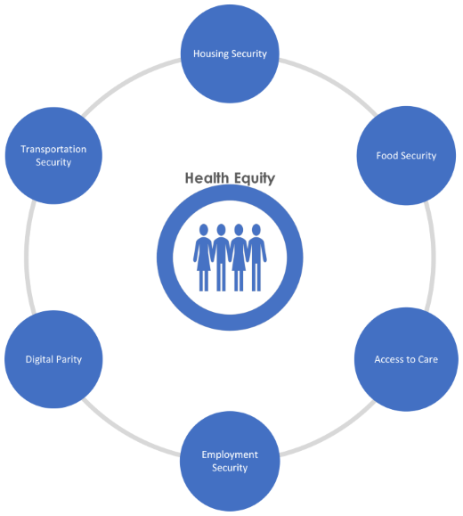
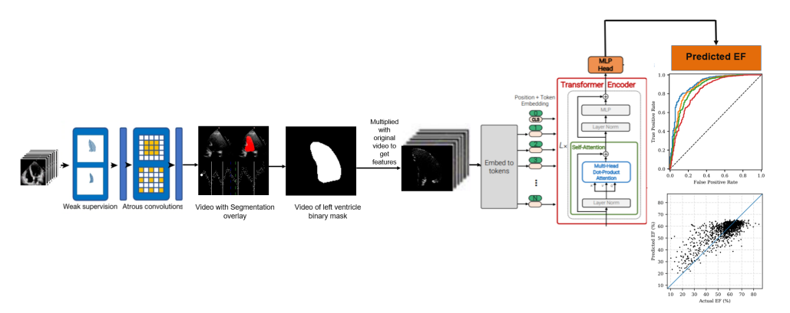

🤖
AI-Powered Conversational Analytics for Healthcare Reporting
Oxbridge Health | March 2025 - July 2025
Designed and implemented a conversational analytics platform integrating MCP servers with Looker to remove SQL dependency for non-technical stakeholders across Finance, Operations, and Clinical teams, and configured Looker’s Explore Assistant with a structured AI agent instruction library to standardize natural language access, governance, and interpretation of core healthcare metrics.
Tech Stack: MCP Servers, Looker, LookML, AI Agents, Gemini
📊
End-to-End Healthcare Reporting Platform
Oxbridge Health | Aug 2024 - Present
Led end-to-end development of Reporting Platform and delivered 55 analytics dashboards across Finance, Operations, Claims, and Provider Network – driving initiatives from requirement gathering through production deployment. Designed a star schema data warehouse with robust staging architecture, built scalable ETL pipelines using AWS Glue and Step Functions, and developed Looker’s LookML semantic layer to power dashboards.
Tech Stack: PostgreSQL, AWS (Glue, Step Functions, RDS, S3, CloudWatch), Looker, LookML, Star Schema, GitHub Actions, CI/CD
🏥
Provider Utilization & Description Generation Pipeline
Oxbridge Health | Jan 2026 - Feb 2026
Automated provider description generation for a member-facing healthcare portal by building an end-to-end pipeline integrating CMS public data, commercial claims, and multi-network provider rosters to compute utilization statistics with peer percentile rankings at scale.
Tech Stack: Python, AWS Glue, PostgreSQL, PySpark, SQL, Jinja
💰
Claims Reconciliation & Payment Reporting Pipeline
Oxbridge Health | June 2025 - Present
Unified claims payment reporting across multiple third-party administrators by building an automated reconciliation pipeline integrating payment authorization, claims data, and TPA files into consolidated financial views supporting payment decisions and audit compliance.
Tech Stack: Python, SQL, AWS (Glue, Step Functions, S3), PostgreSQL

SDoH Risk Attribution & HEDIS Compliance Model
Althea.ai | Feb 2024 - Oct 2024
Built SDoH risk attribution model achieving 95% validation accuracy against historical claims data. Predicted HEDIS compliance with 86% accuracy, directly informing client's member outreach strategy, by developing XGBoost model combining socioeconomic and claims data features.
Tech Stack: Python, XGBoost, Scikit-Learn, AWS SageMaker, SQL, Geocoding APIs

Johns Hopkins University | Jan 2023 - Apr 2023
Achieved 93% AUC classifying at-risk cardiac patients by building video vision transformer analyzing 10,031 echocardiogram videos to predict Ejection Fraction using DeepLabv3 segmentation and ViVIT architecture.
Tech Stack: PyTorch, DeepLabv3, Video Vision Transformers, Hugging Face, Python